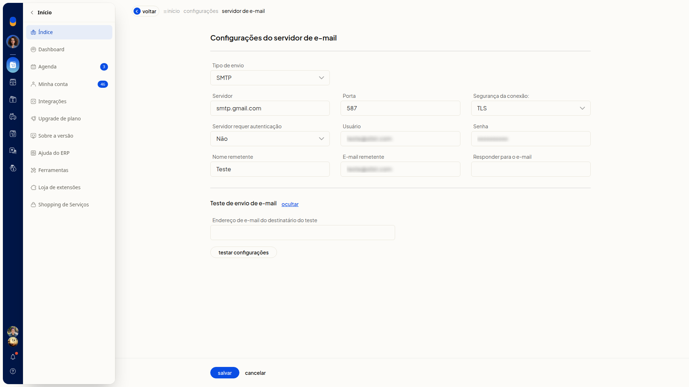

Testar as configurações de e-mail
No ERP da Olist, a seção Teste de envio de e-mail dispara um email de teste para o destinatário que você informar. Ela fica na tela Configurações do servidor de e-mail.
Instruções
-
Acesse Configurações > Configurações ERP > Geral > Configurações do servidor de e-mail.

-
Clique em exibir, na seção Teste de envio de e-mail.

-
Preencha Endereço de e-mail do destinatário do teste. O campo não é obrigatório.

-
Clique em Testar configurações para disparar um email ao destinatário informado.